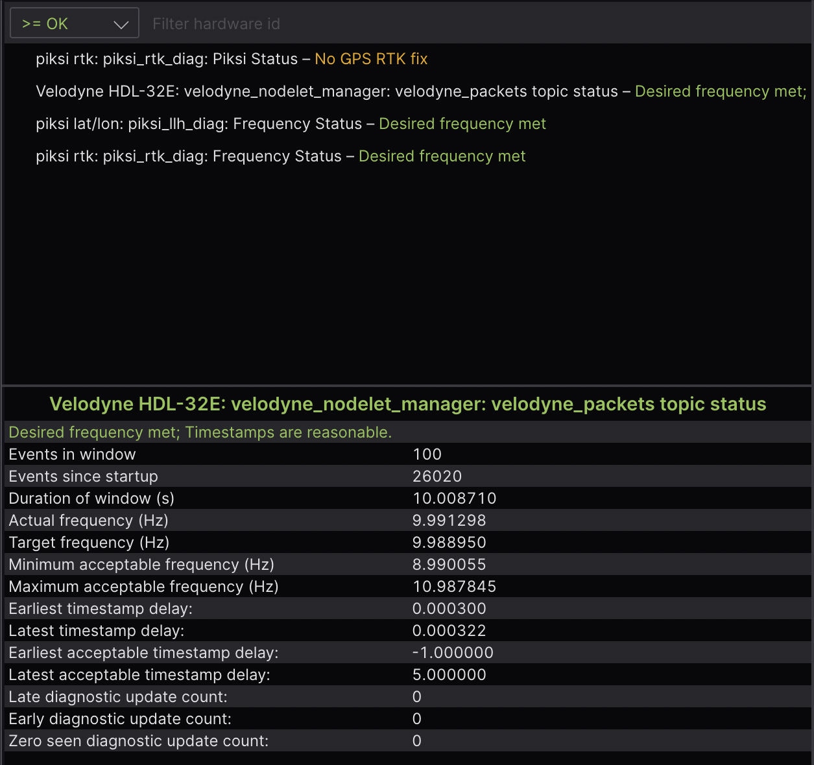

使用Foxglove Studio可视化ROS 2数据 [1163]
Foxglove Studio 是一个开源的可视化和调试工具，用于处理你的机器人数据。 [1164]
它提供了多种方式，以使开发尽可能便捷 - 可以作为独立的桌面应用程序运行，通过浏览器访问，甚至可以在您自己的域上自行托管。 [1165]
在`GitHub <https://www.github.com/foxglove/studio>`__上查看源代码。 [1166]
安装 []
要使用Web应用程序，只需打开Google Chrome并导航到`studio.foxglove.dev <https://studio.foxglove.dev>`__。 [1168]
要在Linux、macOS或Windows上使用桌面应用程序，请直接从`Foxglove Studio网站<https://foxglove.dev/download>`__下载。 [1169]
连接到数据源 [1170]
打开Foxglove Studio后，您将看到一个对话框，其中列出了`所有可能的数据源<https://foxglove.dev/docs/studio/connection/data-sources>`__。 [1171]
要连接到您的ROS 2堆栈，请点击“打开连接”，选择“Rosbridge（ROS 1和2）”选项卡，并配置您的“WebSocket URL”。 [1172]
您还可以直接将任何本地 ROS 2 .db3 文件拖放到应用程序中以加载它们进行回放。 [1173]
查看 Foxglove Studio 文档 获取更详细的说明。 [1175]
使用面板构建布局 [1176]
面板 是可以配置和排列成`布局 <https://foxglove.dev/docs/studio/layouts>`__的模块化可视化界面。您还可以保存您的布局，以供将来使用，供个人参考或与您的大型机器人团队共享。 [1177]
在侧边栏的“添加面板”选项卡中找到可用面板的完整列表。 [1178]
我们特别强调以下一些特别有用的面板： [1179]
1 3D：在三维场景中显示可视化标记 [1180]
向您的3D面板场景中添加基本形状（箭头、球体等）和更复杂的可视化（占用网格、点云等），请发布标记消息。 [1181]
通过左侧的主题选择器选择要显示的主题，并在“编辑主题设置”菜单中配置每个主题的可视化设置。 [1182]
![Foxglove Studio的3D面板 `[1183] <http://fishros.org/page/calib/#/home?apihost=http://fishros.org:2023/ros2/calib&msgid=1183>`_](../_images/3d.png)
2 诊断：过滤和排序诊断消息 [1185]
在运行的反馈中从具有``diagnostic_msgs/msg/DiagnosticArray``数据类型的主题中显示已观察到的节点的状态（即陈旧、错误、警告或正常），并显示给定``diagnostic_name/hardware_id``的诊断数据。 [1186]
更多详细信息，请参考`文档 <https://foxglove.dev/docs/studio/panels/diagnostics>`__。 [1188]
![Foxglove Studio 的图像面板 `[1191] <http://fishros.org/page/calib/#/home?apihost=http://fishros.org:2023/ros2/calib&msgid=1191>`_](../_images/image.png)
4 日志：查看日志消息 [1193]
要实时查看``rcl_interfaces/msg/Log``消息，请使用桌面应用程序连接到正在运行的ROS堆栈。要查看来自预录制数据文件的``rcl_interfaces/msg/Log``消息，您可以将文件拖放到`web <https://studio.foxglove.dev>`__ 或桌面应用程序中。 [1194]
接下来，将`日志 <https://foxglove.dev/docs/studio/panels/log>`__ 面板添加到您的布局中。如果您已正确连接到ROS堆栈，则现在应该看到您的日志消息列表，并能够按节点名称或严重级别进行筛选。 [1195]
有关更多详细信息，请参阅`文档 <https://foxglove.dev/docs/studio/panels/log>`__。 [1196]
5 Plot: 在时间轴上绘制任意值 [1197]
在播放时间轴上绘制主题消息路径上的任意值。 [1198]
指定您想在 y 轴上绘制的主题值。对于 x 轴，可以选择绘制 y 轴值的时间戳、元素索引或另一个自定义主题消息路径。 [1199]
![Foxglove Studio 的绘图面板 `[1200] <http://fishros.org/page/calib/#/home?apihost=http://fishros.org:2023/ros2/calib&msgid=1200>`_](../_images/plot.png)
![Foxglove Studio 的原始消息面板 `[1204] <http://fishros.org/page/calib/#/home?apihost=http://fishros.org:2023/ros2/calib&msgid=1204>`_](../_images/raw-messages.png)
![Foxglove Studio 的 URDF 视图面板 `[1208] <http://fishros.org/page/calib/#/home?apihost=http://fishros.org:2023/ros2/calib&msgid=1208>`_](../_images/teleop.png)
8 URDF Viewer: 查看和操作您的URDF模型 [1210]
要在Foxglove Studio中可视化和控制您的机器人模型，请打开Web或桌面应用程序，并将 URDF Viewer 面板添加到您的布局中。然后，将您的URDF文件拖放到该面板中以可视化您的机器人模型。 [1211]
![Foxglove Studio 的 URDF 视图面板 `[1208] <http://fishros.org/page/calib/#/home?apihost=http://fishros.org:2023/ros2/calib&msgid=1208>`_](../_images/urdf.png)
选择任何发布 JointState 消息的主题，以根据发布的关节状态更新可视化（默认为 /joint_states）。 [1212]
切换到"手动关节控制"模式，使用提供的控制器设置关节位置。 [1213]
![Foxglove Studio的URDF查看器面板，可编辑关节位置。 `[1214] <http://fishros.org/page/calib/#/home?apihost=http://fishros.org:2023/ros2/calib&msgid=1214>`_](../_images/urdf-joints.png)
详细信息请参考`文档 <https://foxglove.dev/docs/studio/panels/urdf-viewer>`__。 [1215]
其他基本操作。 [1216]
1 查看ROS图 [1217]
通过`桌面应用程序<https://foxglove.dev/download>`__，连接<https://foxglove.dev/docs/studio/connection/native>`__到正在运行的ROS堆栈。接下来，在布局中添加一个`主题图<https://foxglove.dev/docs/studio/panels/topic-graph>`__面板。如果已成功连接到ROS堆栈，则应该在该面板中看到ROS节点、主题和服务的计算图。使用面板右侧的控件选择要显示的主题或切换服务。 `[1218]
2 查看和编辑ROS参数 [1219]
通过`桌面应用程序<https://foxglove.dev/download>`__，连接<https://foxglove.dev/docs/studio/connection/native>`__到正在运行的ROS堆栈。接下来，在布局中添加一个`参数<https://foxglove.dev/docs/studio/panels/parameters>`__面板。如果已成功连接到ROS堆栈，则应该实时查看当前的``rosparams`。您可以编辑这些参数值，将``rosparam``更新发布回ROS堆栈。 [1220]
![Foxglove Studio的发布面板 `[1226] <http://fishros.org/page/calib/#/home?apihost=http://fishros.org:2023/ros2/calib&msgid=1226>`_](../_images/publish.png)
{kind=link}